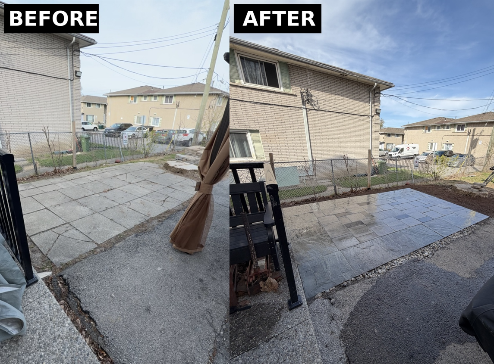
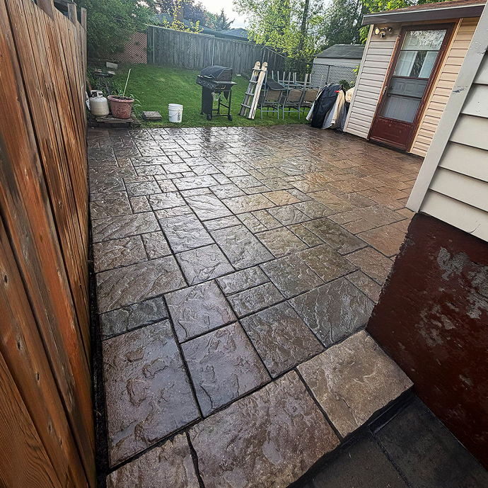

From rescuing worn pavers to sealing, fresh installations and full landscaping, we've got the expertise and premium materials to transform your outdoor space.

Settling, frost heave and erosion take their toll over the years. We lift, re-grade and re-set your existing pavers — fixing trip hazards and pooling water without the cost of a full replacement.
A quality sealer is the single best thing you can do for your hardscape — it guards against stains, fading and freeze-thaw damage, hardens the joint sand to fight weeds, and gives your pavers a rich, finished look. Pick the finish that fits your style:
Keeps the natural, dry appearance of your stone while sealing out stains and locking the joints. Understated and low-sheen.
Best for: a clean, natural look with all-round protection.
Deepens and enriches the colour with a glossy, "freshly-rained-on" sheen that makes your pavers really stand out.
Best for: bold colour and high-impact curb appeal.
A beautiful installation starts beneath the surface. We engineer a properly compacted base and grade for drainage, then lay your pavers with precision for a surface that stays flat and stunning for decades.

Great hardscaping deserves great surroundings. We handle the landscaping that frames your new pavers and lifts your whole yard — from fresh garden beds and greenery to clean edging and proper grading.
Ask About LandscapingEvery project, no matter the size, gets the same commitment to quality.
We use trusted, professional-grade pavers, polymeric sand and sealers — never bargain products that fail early.
Tight joints, clean cuts and level surfaces. Our crews take pride in the details that separate good work from great work.
We stand behind what we build. If something isn't right, we make it right — that's our promise to every customer.
With proper preparation and a quality sealer, most sealing jobs protect your pavers for roughly 3–5 years before a refresh is recommended. Wet-look sealers and heavy-traffic areas may benefit from re-sealing a little sooner. We'll give you honest guidance for your specific surface.
Absolutely. We often re-level a sunken section, fix a problem edge or re-sand joints without touching the rest of the surface. We'll always recommend the most cost-effective fix rather than pushing a full replacement.
Yes — every quote is free and comes with no obligation. We'll visit your property, discuss your goals and provide a clear, written estimate so you know exactly what to expect.
We proudly serve the Greater Toronto Area, Mississauga and Hamilton, along with the surrounding towns and cities in between — including Oakville, Burlington, Brampton, Vaughan, Markham and Milton. Not sure if you're in range? Just reach out and ask.
Sealing is best done in dry, mild weather — typically late spring through early fall in Ontario. New installations should also cure for a period before sealing. We'll help you schedule at the ideal time for lasting results.
Yes! Along with our interlock work we offer landscaping services such as garden beds, plantings, sod, edging and grading — so we can finish your whole outdoor space, not just the hardscape. Tell us what you have in mind and we'll put together a plan.
Tell us what's going on with your pavers and we'll point you in the right direction — free of charge.